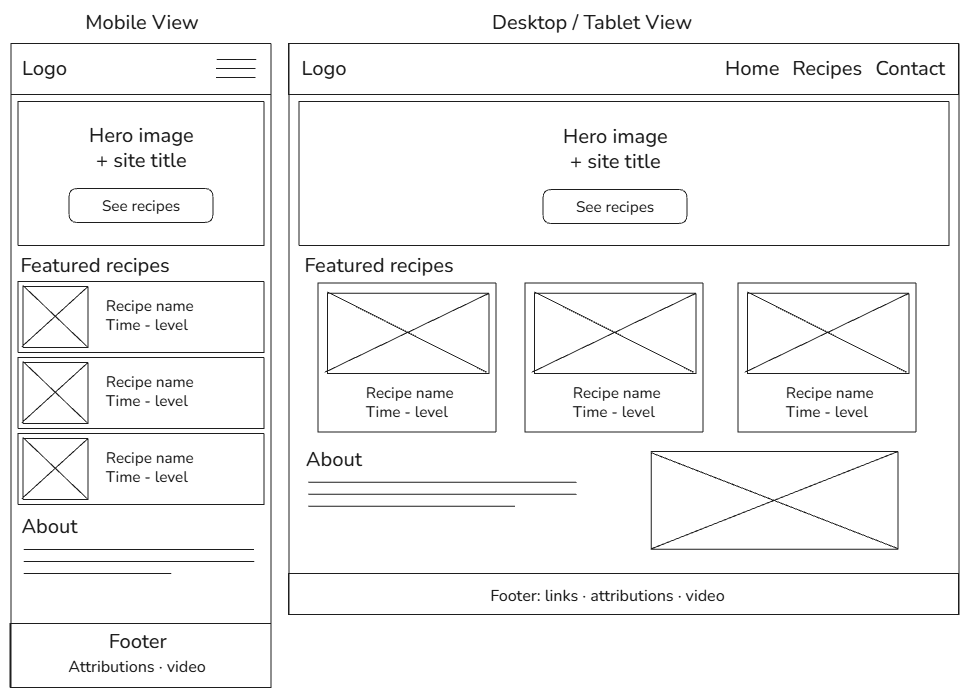

1. Site Name
Sabores del Paraguay
This name represents a website dedicated to traditional Paraguayan recipes. "Sabores" (flavors) reflects the food, culture, and heritage of the country.
2. Site Purpose
- The site provides a catalog of traditional Paraguayan recipes with region, preparation time, difficulty, and ingredients.
- It lets visitors save their favorite recipes to view later.
- It includes a form to suggest a recipe or contact the site.
3. Scenarios
- Which traditional Paraguayan dishes can I make in under 30 minutes?
- What ingredients do I need to make sopa paraguaya?
- How can I suggest my family's recipe to be featured on the site?
4. Color Scheme
These four colors are used across the whole site and in this document.
| Sample | Color | Hex | Where it is used |
|---|---|---|---|
| white | #FFFFFF | Page and card backgrounds, and text on dark areas | |
| Navy | #14213D | Header, footer, and headings | |
| Terracotta red | #B3392E | Buttons, links, and accents | |
| Dark brown | #2B2118 | Paragraph text |
5. Typography
Two Google Fonts are used, and both are applied in this document.
- Playfair Display (serif): headings and the site name.
- Lato (sans-serif): body text, navigation, and buttons.
6. Wireframe
